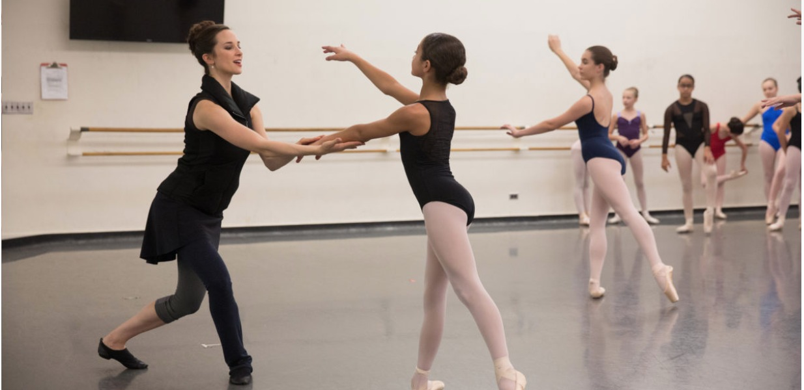

训练内容
- 身体排列与基础站姿
- 把杆与中间基础组合
- 足踝力量、核心稳定与髋部控制
- 音乐性、空间方向与目光训练
- 阶段性反馈与考级准备
Classical Ballet Pathway
科学、循序、尊重身体发展规律的芭蕾训练路径。

Overview
American Ballet Theatre National Training Curriculum 课程适合希望建立系统芭蕾基础的儿童与青少年。课程重点不只是“会做动作”，而是帮助学生理解身体排列、动作路径、音乐节奏和舞台表达。
Note: JIAJING BALLET is an independent studio. ABT and American Ballet Theatre are registered names of American Ballet Theatre. Website wording should be reviewed before public launch.
Start Here